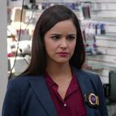
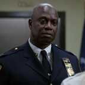

Selecione um personagem
- 
- 
Jake Peralta
Jake is an Ashkenazi-Sephardic Jewish male with dark brown hair and brown eyes. He is often seen wearing a button-down plaid shirt, a blue or red unzipped hoodie, jeans and at times, a stylish, black leather jacket. At Captain Holt's request, Jake has taken to sometimes wearing a tie. He used to wear a watch on his left wrist in the earlier episodes, his police badge on a chain around his neck and starting from the Season 5 Finale, a wedding ring on his left finger.